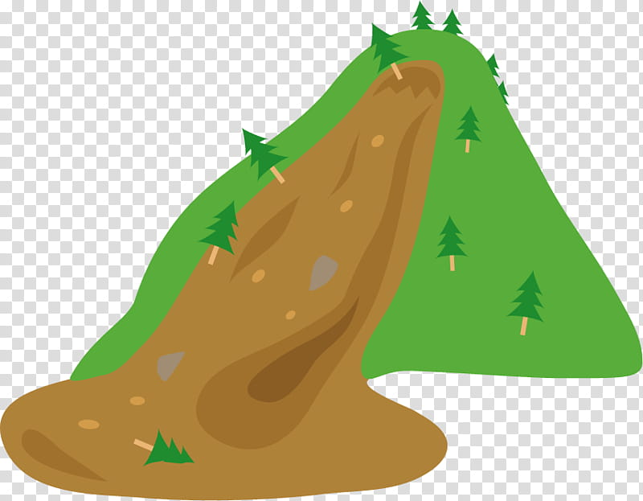
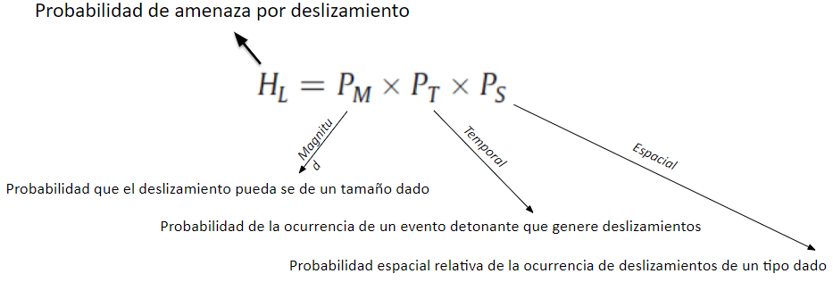
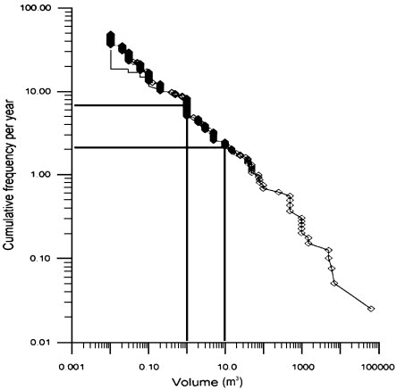

CARTOGRAFÍA GEOTÉCNICA
Probabilidad temporal y magnitud
Prof. Edier Aristizábal

Definición
Amenaza:
Probabilidad de ocurrencia de un potencial fenómeno destructivo dentro de un periodo específico de tiempo y en una determinada área. Dónde? (Localización), Cuándo? (Frecuencia), Qué tan grande? (Volumen)
Zonificación de la amenaza:
La subdivisión del terreno en zonas que son caracterizadas por la probabilidad temporal de la ocurrencia de deslizamientos de un particular tamaño y forma, dentro de un periodo de tiempo dado. Los mapas de amenaza por deslizamientos deben indicar tanto la zona donde el deslizamiento puede ocurrir como la zona de propagación. Una completa evaluación de la amenaza por deslizamientos cuantitativa incluye:
- Probabilidad espacial (Ps): la probabilidad que un área dada sea golpeada por un deslizamiento.
- Probabilidad temporal (Pt): la probabilidad que un evento detonante dado causará un deslizamiento.
- Probabilidad tamaño/volumen (Pm): probabilidad que un deslizamiento tenga un determinado tamaño y volumen.
- Probabilidad propagación (Pp): probabilidad que un deslizamiento alcanzará una cierta distancia ladera abajo.
La amenaza puede ser estimada como la probabilidad conjunta de un tamaño de deslizamiento dado, de la ocurrencia de un deslizamiento en un tiempo establecido y de la ocurrencia espacial del deslizamiento. Se asume que las tres probabilidades son mutuamente independientes.
Descriptores de la amenaza
El IUGS (1997) sugiere que la frecuencia de los deslizamientos pueden expresarse en términos de:
- El número de deslizamientos de ciertas características que pueden ocurrir en el área de estudio en un intervalo de tiempo dado 🡪 métodos basados en el conocimiento
- La probabilidad de un ladera particular de sufrir deslizamientos en un periodo dado 🡪 métodos basados en datos
- Índice de confiabilidad que las fuerzas motoras excedan las fuerzas resistentes, con una frecuencia de ocurrencia que es determinada considerando la probabilidad anual de la presión de poros crítica siendo excedida en el análisis 🡪 métodos con base física

Probabilidad espacial
Modelos físicos
Modelos estadísticos
- Análisis de frecuencia de deslizamientos pasados: Utilizando un inventario de deslizamiento multitemporal. Modelo de probabilidad de Poisson – Modelo Binomial para calcular el intervalo de recurrencia de eventos de deslizamientos históricos y la probabilidad temporal de los deslizamientos.
- Análisis de las lluvias que detonaron deslizamientos: Estableciendo relación empírica entre intensidades del factor detonante y la frecuencia de los eventos de deslizamientos pasados correspondientes para analizar la recurrencia de tales eventos detonantes.
Frecuencia de deslizamientos
Análisis de lluvias

Probabilidad de magnitud
The principle of regional magnitude–cumulative frequency (MCF) curves has long been used in seismology, where the observed power-law relationship between earthquake magnitude and frequency is known as the Gutenberg–Richter Law (Gutenberg and Richter, 1954). Bak et al. (1987) formalized the concept of scale-invariant (fractal) response, seemingly ubiquitous in nature, with the theory of self-organized criticality.
Existen un número importante de correlaciones (power-law MF), pero son difíciles de comparar por:
- La mayoría de inventarios no distinguen entre los tipos de movimientos en masa.
- La selección de diferentes métodos de ploteo (cumulativa vs no cumulativa, linear vs logarítmico) (Brardoni & church, 2004).
- Los inventarios difieren en definir la magnitud. (i) área en planta del área total de la zona de disturbio (Guzzetti et al., 2002; Guthrie & Evans, 2004), (ii) área sobre la ladera, (iii) el cuadrado del ancho (Petellier et al (1997), o (iv) trabajo de campo (dai & Lee (2001; Hungr et al., 1999).
MCF curves derived form the Queen Charlotte data, using four types of “magnitude”: total volume of the event, (V), source area, (A), total disturbed area, (At) and the length of the slope between the crest of the initial slide and the “deposition point” at a slope of 15°. (Hungr et al. 2008)